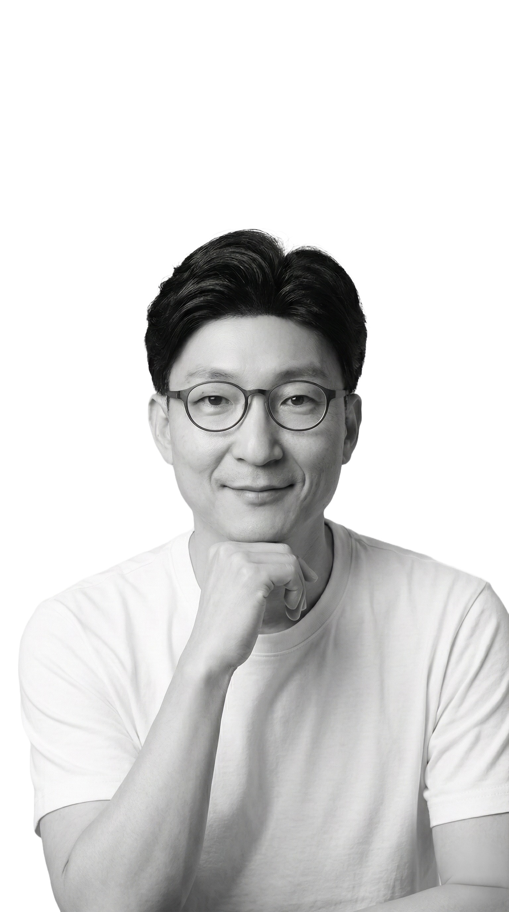

자격증은 제 목표가 아니라 공부법입니다. 시험을 걸어두면 끝까지 파고들게 되고, 결과가 공식적으로 남으니까요. SK에서 25년, 낯선 분야를 계속 맡아온 방법이기도 합니다.

새로운 분야를 만나면, 저는 시험부터 등록합니다. 대충 아는 상태로 멈추지 않게 만드는 가장 확실한 장치니까요.
회계로 시작해 음원, 기업문화, 사내벤처, 미디어까지. SK에서 25년간 맡은 일은 매번 낯선 영역이었습니다. 그때마다 살아남은 방법이 이것이었고, 자격증 15개는 그 습관이 회사 밖에서 남긴 흔적입니다.
그래서 지금은 보컬 중급 과정을 준비하고 있습니다. 25년차에 노래를 배우는 게 뜬금없어 보일 수도 있지만, 회계를 하다 음원 사업으로 옮겨갔던 때와 저에게는 똑같은 일입니다.
한 번은 운이지만 세 번이면 방법입니다. 그 제도 위에서 멘토링한 팀들.
빅데이터를 활용한 간편 추천 플랫폼
SKT 기지국 기상 센서 설치를 통한 고해상도 기상정보 플랫폼
영유아 대상 스마트 보육 플랫폼
데일리 미션 기반 글로벌 탐험 & 소셜 네트워킹 플랫폼
외 3D 공연사업 등 다수
전북 고창에서 초 · 중 · 고를 모두 마치고 서울로. 대학원 전공은 프랜차이즈 경영입니다.
김상수라는 사람의 브랜드를 높이려고 하는 일들을 블로그에 적고 있습니다. 배우는 중에 쓰는 글이라 정답은 아니지만, 과정은 전부 남아 있습니다.